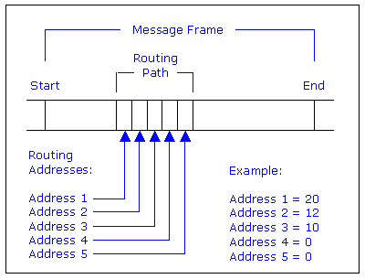

| ModbusSA85 Master |
Features
| Installation | User
Interface | Configuration | Implementation
Notes
Features
The ModbusSA85 Master class establishes communication with a Modbus Plus network using distributed automationX Modbus Plus drivers. It's role is to provide the routing path, server selection, indications for the state of communication, and create a link for the Modbus Plus clients; sending and receiving data to and from the network.
The ModbusSA85 Master class includes the following features:
Features | Installation
| User Interface | Configuration
| Implementation Notes
The ModbusSA85 class is comprised of the following
components (files):
| Class Component | Description | File Name(s) |
| Class Color File | Includes class specific color definitions. | ModbusSA85.color |
| Class File | Class definition file (generated by automationX); includes graphical representation, user interface, internal control logic, etc. | ModbusSA85.symbol |
| Graphic Files | Class Specific Graphic Files
for class operation, physical appearance and documentation. |
axclassdoku16.bmp
axinstanzdoku16.bmp ax_icon.bmp ax_iconhelp.bmp axledgreen.bmp axledgreengr.bmp axledred.bmp axledredgr.bmp axledgrey.bmp axledgreygr.bmp iconhelp.gif titlebarback.gif errologic.gif routingpath.bmp routingpathdeclare.bmp selectserver.bmp |
| HTML-Document | HTML document for Online Help | ModbusSA85.htm |
| Enum File | Enumerator information for selectors | ModbusSA85.enum |
Features | Installation
| User Interface | Configuration
| Implementation Notes
The unique name indentifier ($Instance) is shown on the top of the graphical representation. Below this some displays are located.
Figure 1: Graphical Representation
Communication Status
Indicators for communication status:
See Implementation Notes - Modbus Routing.
Server Selection
The ModbusSA85 Master allows a choice of servers for communication:
Communication status and messages are provided in the lower portion of the graphical interface. The error indication is linked to two bits from within the class: InitError and HardwareError. Both bits are driven by the automationX Modbus software; the InitError bit indicates a configuration error (invalid routing) while the HardwareError bit indicates a problem communicating with the SA85 card or a network node.
The runtime messages are linked to the StatusString variable in the class. This variable receives messages from the automationX Modbus Plus software during runtime. Possible messages - and their meanings - are:
Figure 2: Operator popup
Features | Installation
| User Interface | Configuration
| Implementation Notes
Hardware
Ensure proper installation of the Modicon SA85 card. Consult technical documentation provided by Modicon for detailed installation instructions.
Modicon Distribution Software
The SA85 device includes a set of software programs required for proper installation. These include devices drivers, setup programs, a library of C functions for Modicon's NetBIOS implementation, a diagnostic utility and sample programs for addressing and data transfers.
automationX Distribution Software
The aX Modbus Plus class set includes driver & application software - two files - located in the "automationX/bin" directory:
ModbusSA85 Master Class
Take the following steps to configure the ModbusSA85 class:
Troubleshooting
Please see Troubleshooting in the Modbus Plus Overview if problems are encountered.
Features | Installation
| User Interface | Configuration
| Implementation Notes
Modbus Plus Routing
Modbus Plus nodes use a five byte routing
path - embedded in a Modbus Plus message - to address each other.
This allows routing to destination nodes up to four networks away from
the original node. Consider the following figure:

This example shows routing to a controller through three networks - connected by two bridge devices. According to the path, the message is first sent to node 20; a bridge on the local network. That bridge forwards the message to a second bridge - at node 12 on the second network. The second bridge forwards the message to its destination - a controller at node 10 on the third network. A value of 0 for addresses 4 and 5 indicates no further routing.
Each network device uses the routing bytes in a specific
way. The following section describe the differences:
The ModbusSA85 Master class uses the Data Master (DM) path type; enabling reads and writes to the Modbus Plus network. This type must be declared - included in the routing path - as "DM". For example, DM.5.0.0.0.0
Changing the Routing Path
The routing path in the ModbusSA85 Master exists in two states: Init and Online. Init is the initial or startup value. Online is a retentive value that can be changed while the system is running, overwriting the Init value. Routing is declared in the RoutingPath variable under the Server Data list.
The initial routing configuration requires the RoutingPath variable be changed from the ModbusSA85 object in the aX-Builder - i.e. editing the program. The Online routing configuration can be changed - while the program is running - using the Explorer window.
Features | Installation
| User Interface | Configuration
| Implementation Notes